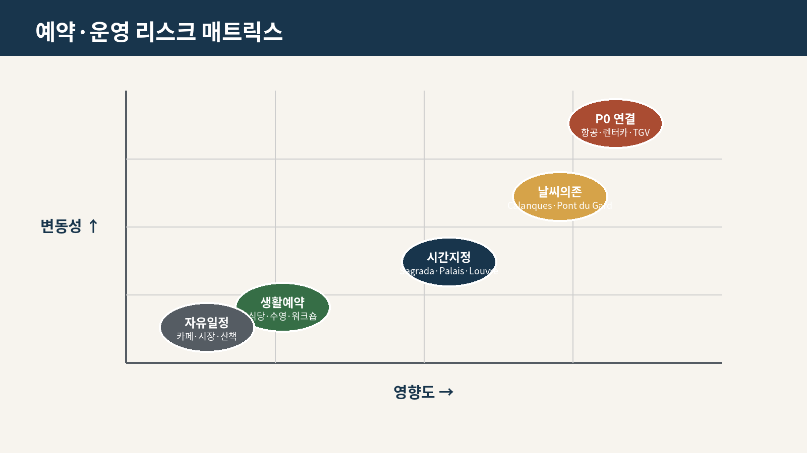

예약 현황

| ID | 카테고리 | 지역 | 예약항목 | 날짜 | 시간 | 우선순위 | 상태 | 예약목표일 | 무료취소기한 | 총액 | 통화 | 결제액 | 잔액 | 예약번호 | 사업자 | 주소/역 | 소스 URL | 기준 챕터 | 리스크/대체안 | 최종확인일 | 비고 |
|---|---|---|---|---|---|---|---|---|---|---|---|---|---|---|---|---|---|---|---|---|---|
| R001 | 숙소 | Barcelona | 숙소 3박 | 2026-08-29 | 체크인 14:00–00:00 | P0 | 예약완료 | 2026-08-05 | 701054 | KRW | 701054 | 76428 | 365585SG255002 · Trip.com 1400827967207904 | Occidental Barcelona 1929 | Carrer de la Creu Coberta, 20-22, 08014 Barcelona, Catalonia, Spain | https://www.barcelo.com/en-us/occidental-barcelona-1929/ | 04_Barcelona_Sitges_v1.1.md | 재고·총액·냉방·엘리베이터 | 2026-08-05 | Trip.com 예약 · 전화 +34 936 26 88 44 · 체크아웃 09:30–12:00 · 잔액은 현장 결제 €46.2(도시세 포함)의 원화 환산 약치 · 무료취소기한 재확인 | |
| R002 | 숙소 | Girona | 바스카라의 B&B · 3박 | 2026-09-01 | 체크인 12:00 | P0 | 예약완료 | 330 | EUR | HM2YPHDRW5 | Airbnb | 비공개 숙소 · 정확 주소는 개인 보관본에서 확인 | 05_Girona_Collioure_Emporda_v2.1.md | 주차·조식·결제·취소조건 재확인 | 2026-08-05 | Jason·Julia · 2026-09-01~09-04 · 3박 | |||||
| R003 | 숙소 | Nice | Nice 숙소 5박 | 2026-09-04 | P0 | 미조사 | 2026-08-05 | EUR | 0 | 06_Nice_Cote_d_Azur_v1.3.md | 5박 총액·조용한 방향·계단·냉방·9/9 체크아웃 | 2026-08-01 | 9/8 생활·회복일 포함 | ||||||||
| R004 | 숙소 | Aix-en-Provence | Aix 숙소 4박 | 2026-09-09 | P0 | 미조사 | 2026-08-05 | EUR | 0 | itinerary.json / v2.0 지역 챕터 | 4박 총액·주차·도심진입·9/9 늦은 체크인 | 2026-08-04 | 9/11 Marseille 기본·Cassis 완전 대체안 | ||||||||
| R005 | 숙소 | Luberon | 농가 숙소 3박 | 2026-09-13 | P0 | 재확인 | 2026-08-05 | EUR | 0 | itinerary.json / v2.0 지역 챕터 | 기존 4박→3박 예약 변경 필요; 입지·주방·세탁·주차 | 2026-08-04 | 9/16 체크아웃으로 변경 완료 여부 미확인 | ||||||||
| R006 | 숙소 | Avignon | 숙소 4박 | 2026-09-16 | P0 | 재확인 | 2026-08-05 | EUR | 0 | itinerary.json / v2.0 지역 챕터 | 기존 9/17 체크인→9/16 변경 필요; 주차·TGV 반납 동선 | 2026-08-04 | 예약 변경 필요 | ||||||||
| R007 | 숙소 | Lyon | 숙소 4박 | 2026-09-20 | P0 | 재확인 | 2026-08-05 | EUR | 0 | itinerary.json / v2.0 지역 챕터 | 기존 9/21 체크인→9/20 변경 필요; Part-Dieu 접근·야간 귀가 | 2026-08-04 | 예약 변경 필요 | ||||||||
| R008 | 숙소 | Paris | 숙소 16박 | 2026-09-24 | P0 | 재확인 | 2026-08-01 | EUR | 0 | itinerary.json / v2.0 지역 챕터 | 기존 15박→16박 예약 변경 필요; 총액·세탁·생활권 | 2026-08-04 | 9/24 추가 1박 변경 완료 여부 미확인 | ||||||||
| R009 | 렌터카 | Barcelona/Girona | BCN 렌터카 — Sants 인수→El Prat 반납 | 2026-09-01 | 9/1 07:00 인수 · 9/4 14:00 반납 | P0 | 예약완료 | 2026-08-01 | EUR | 0 | 176.01 | L671E2E0288 | Hertz | Barcelona Sants (C/ Viriat 45) → El Prat Airport T1·2 | https://www.hertz.com | 04/05 | 짐 노출·국경·반납지 | 2026-08-09 | Ford Puma급(E0 CDAR) · 후지불 €176.01 · VISA ASIA CARDS 10% · 무제한 주행 | ||
| R010 | 항공 | Girona/Nice | BCN→NCE 항공 VY1521 | 2026-09-04 | 15:30–16:55 | P0 | 예약완료 | 2026-08-01 | EUR | 0 | NMGI4Q | Vueling Airlines | Josep Tarradellas Barcelona-El Prat T1 → Nice Côte d'Azur T1 | https://www.vueling.com/en | 05/06 | 공항 이동·수하물·차량 반납 | 2026-08-09 | Economy · E-ticket 번호는 발권메일 확인 후 기입 | |||
| R011 | 렌터카 | Nice/Provence | 니스 렌터카 — Nice역 인수→Avignon TGV역 반납 | 2026-09-09 | 9/9 09:00 인수 · 9/20 09:00 반납 | P0 | 예약완료 | 2026-08-01 | EUR | 0 | 608.09 | L672E080313 | Hertz | Nice Railway Station (Avenue Thiers) → Avignon TGV (Place de l'Europe) | https://www.hertz.com | itinerary.json / v2.0 지역 챕터 | 9/9 인수·9/20 반납으로 예약 변경 필요 | 2026-08-09 | Renault Captur급(F0 CDAR) · 후지불 €608.09 (drop-off €180 포함) · 무제한 주행 · 기존 NCE T2 계획에서 인수지 변경 | ||
| R012 | 철도 | Avignon/Lyon | Avignon TGV→Lyon Part Dieu — INOUI 12176 1등석 | 2026-09-20 | 10:22→11:28 | P0 | 예약완료 | 2026-08-10 | EUR | 0 | PNR 미표기 — 발권메일 확인 | SNCF (TGV INOUI) | 3호차 308번 · Duo Côte à Côte | https://www.sncf-connect.com | itinerary.json / v2.0 지역 챕터 | 기존 9/21→9/20 열차 변경 필요 | 2026-08-09 | 승차권 이미지 기준 · PNR 은 발권메일에서 확인 후 기입 | |||
| R013 | 철도 | Lyon/Paris | Lyon→Paris | 2026-09-24 | P0 | 재확인 | 2026-08-10 | EUR | 0 | itinerary.json / v2.0 지역 챕터 | 기존 9/25→9/24 열차 변경 필요 | 2026-08-04 | 체크아웃·Paris 체크인 | ||||||||
| R014 | 입장권 | Barcelona | Sagrada Família | 2026-08-30 | 10:30 | P1 | 미조사 | 2026-08-01 | EUR | 0 | 04_Barcelona_Sitges_v1.1.md | 시간지정·성당 운영 | |||||||||
| R015 | Peralada — 본 일정에서 제외·실제 예약 없음 | Girona/Peralada | Peralada — 본 일정에서 제외·실제 예약 없음 | 2026-09-02 | 17:30 | P1 | 재확인 | 2026-08-20 | EUR | 0 | 05_Girona_Collioure_Emporda_v1.1.md | Collioure 지연 시 취소 | |||||||||
| R016 | 입장권 | Nice | Nice v1.2 핵심 미술관 | 2026-09-06 | P1 | 미조사 | 2026-08-25 | EUR | 0 | 06_Nice_Cote_d_Azur_v1.2.md | 최신 날짜별 기본안 추출 필요 | ||||||||||
| R017 | 입장권 | Aix | Cézanne 핵심 장소 | 2026-09-12 | P1 | 미조사 | 2026-08-25 | EUR | 0 | 07_Aix_en_Provence_v1.1.md | 운영·시간지정 확인 | ||||||||||
| R018 | 입장권 | Avignon | Palais des Papes 등 | 2026-09-17 | P1 | 미조사 | 2026-09-01 | EUR | 0 | itinerary.json / v2.0 지역 챕터 | 결합권·입장시간 | 2026-08-04 | 기존 예약이 있으면 날짜 고정 여부 확인 | ||||||||
| R019 | 철도 | Lyon/Annecy | Annecy 왕복 | 2026-09-23 | P1 | 미조사 | 2026-09-01 | EUR | 0 | itinerary.json / v2.0 지역 챕터 | 왕복시간·수요일 시장 없음·크루즈 대체 | 2026-08-04 | 날짜는 유지, 운영 재확인 | ||||||||
| R020 | 입장권 | Paris | 주요 미술관 시간지정권 | 2026-09-28 | P1 | 미조사 | 2026-08-25 | EUR | 0 | 11_Paris_Long_Stay_v1.1.md | 휴관일·특별전 연동 | ||||||||||
| R021 | 공연 | Paris | 1/6 Il Barbiere di Siviglia — Opéra Bastille | 2026-10-01 | 19:30 | P1 | 예약대기 | 2026-08-05 | EUR | 0 | https://billetterie.operadeparis.fr/api/1/redirect/product/performance?id=10229122672727&lang=en | 11_Paris_Long_Stay_v2.0.md | 공식판매·공식 재판매만; 10/7 19:30 백업 | 2026-08-05 | 3h15·이탈리아어·FR/EN 자막·현재 €77–205 | ||||||
| R022 | 공연 | Paris | 2/6 Hamlet — Opéra Bastille | 2026-10-09 | 19:30 | P1 | 예약대기 | 2026-08-05 | EUR | 0 | https://billetterie.operadeparis.fr/api/1/redirect/product/performance?id=10229118155385&lang=en | 11_Paris_Long_Stay_v2.0.md | 공식판매·공식 재판매만; 10/6 19:30 백업 | 2026-08-05 | 3h40·프랑스어·FR/EN 자막·현재 €28–155 | ||||||
| R023 | 입장권 | Paris | 3/6 Qatar Prix de l’Arc de Triomphe | 2026-10-04 | P1 | 예약대기 | 2026-08-05 | EUR | 0 | https://billetterie.france-galop.com/en/event/qatar-prix-de-larc-de-triomphe/ | 11_Paris_Long_Stay_v2.0.md | 메인 레이스 데이; 저녁행사 금지 | 2026-08-05 | France Galop BOOK NOW 확인 | |||||||
| R024 | 공연 | Paris | 4/6 Este Mundo — Chaillot (선택) | 2026-10-08 | 20:30 | P2 | 예약대기 | 2026-09-15 | EUR | 0 | https://www.festival-automne.com/fr/edition-2026/bouchra-ouizguen-este-mundo | 11_Paris_Long_Stay_v2.0.md | 10/7–9 연속 3일 피로를 수용할 때만 구매 | 2026-08-05 | 1h·현재 €8–25 | ||||||
| R025 | 입장권 | Paris | 5/6 Clos Montmartre 제한 내부방문 | 2026-10-07 | 11:00 | P2 | 재확인 | 2026-09-14 | EUR | 0 | https://fetedesvendangesdemontmartre.com/le-programme/ | 11_Paris_Long_Stay_v2.0.md | 예약 실패 시 외관·축제시장·골목만 | 2026-08-05 | 공식 프로그램상 9/14 예약 오픈 | ||||||
| R026 | 공연 | Paris | 6/6 교회 콘서트 — 정확한 프로그램 확인 후 | P2 | 재확인 | 2026-09-15 | EUR | 0 | 11_Paris_Long_Stay_v2.0.md | 작품·연주자·날짜·공식판매처 검증 전 구매 금지 | 2026-08-05 | O2 패키지에서만 추가 | |||||||||
| R027 | 기타 | 전체 | 여행자보험 | 2026-08-20 | P1 | 미조사 | 2026-08-10 | KRW | 0 | 전체 | 의료·렌터카·수하물 보장 | ||||||||||
| R028 | 기타 | 전체 | eSIM/통신 | 2026-08-25 | P2 | 미조사 | 2026-08-20 | KRW | 0 | 전체 | 스페인·프랑스 전 구간 |